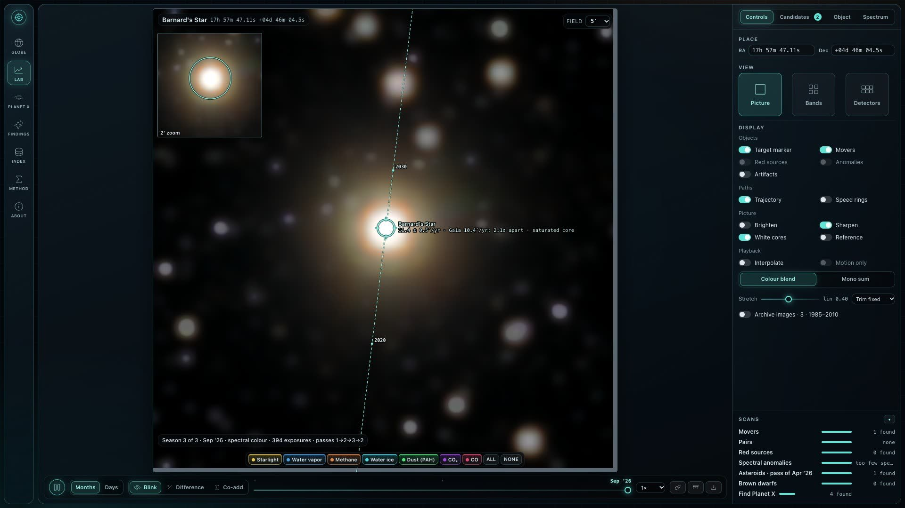

NASA Space Apps Challenge 2026 · Planet X and SPHEREx
Flip through the sky.
Spot what moves.
Pluto was found by comparing two photographs of the same stars and noticing one dot that had shifted. Since 2025, NASA's SPHEREx has photographed the entire sky every six months in 102 colours of infrared light, far more than anyone can check alone. SPHEREx Space lets anyone pick a spot, play its images like a short film, and see what moved.

Demo · 30 seconds
See it in 30 seconds.
Presentation
Seven slides.
Present in the browser with the arrow keys, or download the PDF.
One-page summary
What it does for the challenge.
The challenge asks for a public web tool that displays SPHEREx images of a patch of sky "like a little video, making it easy to spot moving objects". That is the core of SPHEREx Space, built on the real Level-2 files from NASA's public archive.
See the sky change
- Type RA/Dec or a name, or spin the globe; field of view 2′ to 60′.
- Months: every pass is cleaned, stacked and coloured by its own spectrum, then played like a film; blink, difference or co-add.
- Days: the visits inside one pass, hours apart, for asteroids.
- Archive plates (DSS 1950–1999, 2MASS, AllWISE) add decades.
Use all 102 bands
- Named bands for people: starlight, water vapour, methane, water ice, dust, CO₂, CO; or the six detectors, each added up on its own.
- A spectrum for any source, measured on the fly in every exposure.
- Red sources (3.8–5 µm against 1.1–1.6 µm) and spectral anomalies, each with a passport.
Help find what moves
- Nearby stars and brown dwarfs moving between the half-yearly passes, each checked against ESA Gaia DR3.
- Find Planet X: adds the exposures along trial orbits at 30–2000 au. Found blind and linked over three passes, Eris comes out at 95.6 ± 0.4 au (JPL 95.5); Makemake at 52.5 ± 0.2 au from two passes.
- Also asteroid tracks inside a pass, with known bodies from JPL ringed.
- Every view lives in the address, so it can be shared or embedded.
- Free, no account, open source (Apache-2.0).
How we validated it.
Every check with its number and picture →
| Check | What we measured on real SPHEREx data | Result |
|---|---|---|
| Nearby stars vs ESA Gaia | Live, 5′ fields: Barnard's Star 11.37 ± 0.47″/yr (Gaia DR3 10.39; its saturated core pulls a 5′ field high, a 20′ field gives 10.7 ± 0.8). ε Indi B 4.59 ± 0.49″/yr (Gaia 4.684). WISE 0855−0714, too cold for Gaia, 7.93 ± 0.61″/yr (SIMBAD 8.15). | same motion ✓ |
| Known asteroids, blind | A 60′ ecliptic field, 24 visits: the search inside a pass finds 6 of the 8 known bodies brighter than V 19.1 without being told; JPL names them, and every track found in the December 2025 60′ ecliptic field is a known body. | 6 of 8, 0 false ✓ |
| Chance control | Every search re-run on shuffled data, 20 trials per field: no chance track between passes; inside a pass chance links three visits, never four, so a track needs four. | 0.0 tracks / field |
Limits we state: stars brighter than about J = 10.5 saturate and get no SPHEREx spectrum; a track needs three seasons; shifts under about 5″ between the first and last season are not caught; a lead is not a discovery until confirmed.
What is new.
Seasons you can see
Exposures at different wavelengths and pixel grids are stacked per season and coloured by SPHEREx's own spectrum, so a star's shift shows, not the flicker of its spectrum.
Months and Days, one timeline
The same field plays its seasons (nearby stars, brown dwarfs) or the visits inside one pass (asteroids), without reloading.
Find Planet X
The exposures are added along every orbit a distant body could have; the jump between passes gives its distance. No Planet X is claimed.
Honest searches
Every mover carries its Gaia verdict, every search a chance control, every anomaly a passport that says why. "Anomaly", never "discovery".
Links
We bring 15+ years of software engineering and architecture experience, with expertise in AI, autonomous agents, advanced information retrieval, and delivering solutions from concept to production.